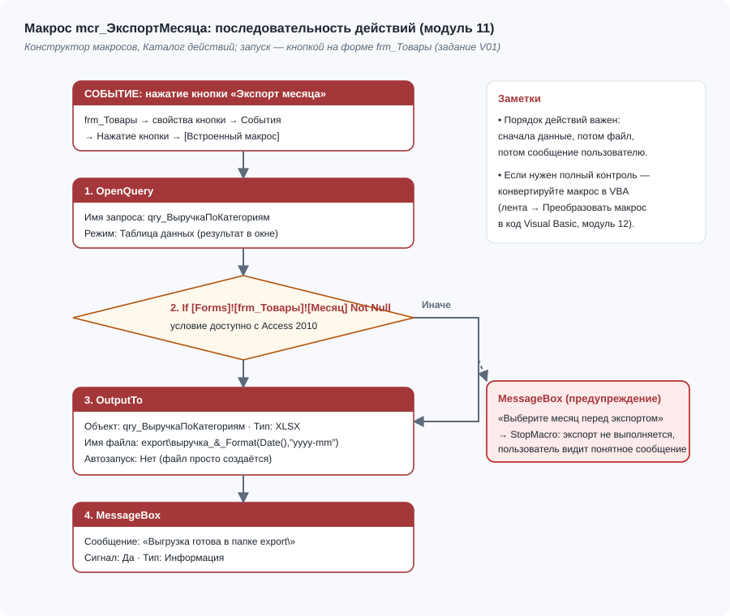

Модуль 11Макросы Access
Цели обучения
До сих пор каждую операцию в ShopData вы выполняли руками: открыть запрос, посмотреть, выгрузить, сообщить коллегам. Макрос — это записанная по шагам последовательность таких операций, которая выполняется сама по щелчку кнопки или при открытии базы. Это первый уровень автоматизации Access: он не требует программирования, но снимает рутину и уменьшает число ручных ошибок — ровно то, что аналитик делает десятки раз в неделю. По итогам модуля студент сможет:
- собирать макросы в конструкторе из каталога действий, заполняя аргументы каждого действия;
- использовать действия OpenForm, OpenQuery, OpenReport, OutputTo, TransferText, MessageBox, SetProperty и StopMacro в задачах ShopData;
- строить ветвления «Если/Иначе», группы макросов и макрос AutoExec, запускать базу «как в продакшене»;
- настраивать доверенные расположения и «Включить содержимое», чтобы макросы не блокировались;
- осознанно выбирать между макросом и VBA и объяснить, где у макросов проходит граница возможностей.
Необходимые предварительные знания
Макросы управляют всеми объектами, которые вы уже создали: открывают формы, запускают запросы, печатают отчёты и выгружают их в файлы. Поэтому чем больше готовых объектов у вас в базе, тем полезнее модуль: каждый шаг практической части будет ссылаться на что-то реальное из ShopData. Отдельной подготовки по программированию не требуется — макросы сознательно построены как конструктор без кода, а выражения уровня Weekday(Date())=2 вы уже встречали в условиях запросов. Для входа в модуль нужны:
- модуль 9 — формы frm_Товары и frm_Заказы, кнопки, окно свойств, вкладка «События»;
- модуль 8 — итоговый запрос qry_ВыручкаПоКатегориям и понимание action-запросов;
- модуль 10 — отчёты rpt_Топ10Товаров и rpt_Накладная, экспорт в PDF вручную;
- модуль 4 — понятие спецификации импорта (понадобится для действия TransferText);
- модуль 6 — опыт написания выражений в условиях отбора.
Если отчёты из модуля 10 не собраны, макрос из практической части всё равно заработает, но выгрузит только запрос qry_ВыручкаПоКатегориям. Для полного сценария «одна кнопка — два файла» сначала соберите rpt_Топ10Товаров: его PDF-выгрузка входит в усложнение задания V01.
Теория
Макрос — это список действий Access, выполняемых сверху вниз. Каждое действие имеет имя (OpenForm, OutputTo, MessageBox) и набор аргументов, которые заполняются в нижней панели конструктора; аргументы работают как параметры функции, только вводятся в поля, а не в скобках. Конструктор макросов, переработанный в Access 2010, похож на ленту с блоками: действия перетаскиваются из «Каталога действий», ветвление оформляется блоком «Если», ошибки чтения схемы исключены — вы всегда видите порядок выполнения сверху вниз.
Рабочий набор аналитика — десять действий. Их стоит выучить не по алфавиту, а по задачам: открыть объект, выгрузить объект в файл, импортировать файл, сказать пользователю, изменить интерфейс, вызвать код, обновить данные, остановиться.
| Действие | Назначение | Ключевые аргументы | Пример в ShopData |
|---|---|---|---|
| OpenForm | открывает форму | Имя формы, Режим данных, Режим окна | утром открыть frm_Товары |
| OpenQuery | открывает запрос (для action-запроса — выполняет) | Имя запроса, Представление, Режим данных | показать qry_ВыручкаПоКатегориям |
| OpenReport | открывает или печатает отчёт | Имя отчёта, Представление, Условие Where | открыть rpt_Топ10Товаров |
| OutputTo | выгружает объект в файл XLSX/PDF/RTF | Тип объекта, Имя объекта, Формат вывода, Файл | выгрузка выручки в Excel |
| TransferText | импортирует/экспортирует текстовые файлы | Тип передачи, Имя спецификации, Имя таблицы, Имя текстового файла | еженедельный импорт новых товаров |
| MessageBox | окно с сообщением | Сообщение, Гудок, Тип, Заголовок | «Файл сохранён» после экспорта |
| SetProperty | меняет свойство элемента управления | Имя элемента, Свойство, Значение | блокировать кнопку до заполнения дат |
| RunCode | вызывает функцию VBA | Имя функции | мост к модулю 12 |
| Requery | обновляет записи формы или списка | Имя элемента управления | обновить список товаров после импорта |
| StopMacro | останавливает макрос | — | выйти, если условие не выполнено |
Выполняется макрос строго сверху вниз, а блок «Если» может пропустить вложенные в него действия — это единственное «ветвление», которое нужно понимать, чтобы читать любой макрос курса (см. рис. 1).

Ветвление «Если/Иначе» появилось в Access 2010 и сделало макросы по-настоящему полезными: условие записывается выражением — например, Weekday(Date())=2 для понедельника или [Forms]![frm_Товары]![cboCategory] Is Null для незаполненного списка, — а по ветке «Иначе» выполняются альтернативные действия. Группа макросов экономит количество объектов: внутри одного mcr_Меню живут подмакросы, и кнопка ссылается на него как mcr_Меню.ЭкспортМесяца. Макросы данных — особый вид, привязанный к событиям таблицы («До изменения», «После вставки», «После обновления»): они хранятся внутри самой таблицы и защищают данные так же, как условия на значение из модуля 5, только с любыми действиями внутри. Наконец, макрос с точным именем AutoExec Access запускает автоматически при открытии базы — так делают «стартовую панель», если только базу не открыли с зажатым Shift.
Чем макрос уступает коду VBA, лучше увидеть в сравнении, а не в словах: у макросов нет циклов и полноценных переменных (только TempVars), нет доступа к Recordset, отладка сводится к пошаговому прогону, а обработка ошибок — к паре действий. Зато макросы безопаснее для распространения: файл с ними реже блокируется политиками и не требует навыков чтения кода от коллеги-преемника.
| Критерий | Макрос | VBA (модуль 12) |
|---|---|---|
| Порог входа | конструктор без синтаксиса | нужно читать код: Dim, Set, DoCmd |
| Ветвление | блок «Если/Иначе» (с 2010) | If…Then…Else, Select Case |
| Циклы | нет — только линейный список | Do While, For Each по Recordset |
| Переменные | TempVars, ограниченно | полноценно: Dim, константы |
| Доступ к данным | через действия OpenQuery/OpenForm | Recordset, CurrentDb.Execute |
| Обработка ошибок | действие OnError, останов макроса | On Error GoTo, коды Err.Number |
| Отладка | пошаговое выполнение макроса | точки останова F9, Immediate, Locals |
| Работа с файлами | OutputTo, TransferText по шаблону | любая логика: пути, проверки, циклы |
| Безопасность | блокируется реже, читается глазами | требует доверенного расположения |
Безопасность макросов стоит освоить сразу, иначе первый же запуск огорчит жёлтой полосой «Предупреждение системы безопасности». Access блокирует макросы в файлах из «недоверенных» папок: либо жмите «Включить содержимое» при каждом открытии, либо один раз добавьте папку с базой в доверенные расположения — «Файл → Параметры → Центр управления безопасностью → Параметры центра… → Доверенные расположения → Добавить новое расположение». Для учебной базы ShopData второй путь удобнее:_macros оживут сами и не потребуют щелчков в понедельник утром.
Для 2007–2013: отличия интерфейса
Современный конструктор макросов с «Каталогом действий» и блоком «Если» появился в Access 2010. В Access 2007 ветвление делали через отдельный столбец «Условие» старого конструктора: условие писалось слева от строки действия, а действия «БлокЕсли» не существовало; группы макросов и макросы данных в виде таблиц были доступны ограниченно. Всё описанное в модуле, кроме макросов данных, воспроизводится в 2007 через столбец «Условие»; в Access 2013 и 2016 интерфейс не менялся — скриншоты 2010 года подойдут для всех последующих версий.
Пошаговая демонстрация
Соберём стартовый макрос базы — mcr_ОткрытиеБазы, который будем сохранять под именем AutoExec. Он открывает frm_Товары, приветствует пользователя и по понедельникам напоминает о планёрке. Заодно вы увидите каталог действий, аргументы, блок «Если» и проверите безопасность — полный маршрут, который потом повторяется в любом макросе курса.
- Откройте вкладку Создание → группа Макросы и код → Макрос. Откроется пустой конструктор: справа «Каталог действий», снизу — панель аргументов.
- В «Каталоге действий» найдите OpenForm и дважды щёлкните — в макросе появится первый блок. Аргументы: Имя формы — frm_Товары, Представление — Форма, Режим данных — Форма, Режим окна — Обычное.
- Добавьте действие MessageBox: Сообщение — «База ShopData открыта. Хорошей работы!», Гудок — Да, Тип — Информация, Заголовок — ShopData.
- В каталоге раскройте группу Программирование потока и добавьте блок Если. В поле условия введите
Weekday(Date())=2— выражение истинно по понедельникам, потому что Weekday по умолчанию нумерует воскресенье единицей. - Внутрь блока «Если» перетащите второй MessageBox с сообщением «Понедельник: планёрка по продажам в 10:00». Обратите внимание: Access рисует вложение отступом — это и есть ветвление.
- Сохраните макрос (Ctrl+S) под именем AutoExec — точно так, с большой буквы A. Закройте конструктор.
- Закройте базу («Файл → Закрыть») и откройте её снова обычным способом: frm_Товары откроется сама, за ней — приветствие. Если сегодня понедельник, появится и напоминание о планёрке.
- Теперь аварийный путь: закройте базу и откройте её, удерживая Shift. AutoExec не выполнится — так разработчик заходит «под капот» без стартовых окон.
- Если при открытии мелькнула жёлтая полоса «Предупреждение системы безопасности» — нажмите Включить содержимое, а затем добавьте папку с базой в доверенные: Файл → Параметры → Центр управления безопасностью → Параметры центра управления безопасностью → Доверенные расположения → Добавить новое расположение.
- Для наглядности откройте AutoExec в конструкторе и на вкладке Конструктор нажмите Пошаговое выполнение макроса, затем запустите его двойным щелчком: Access будет показывать каждое действие с паузой — «Один шаг» продвигает выполнение, «Остановить все макросы» прерывает.
Обратите внимание на два свойства этого макроса, которые переносимы на все остальные. Первое: порядок аргументов не надо помнить — конструктор сам показывает обязательные поля, а всплывающая подсказка объясняет каждый. Второе: макрос не спрашивает «а существует ли форма» — если переименовать frm_Товары, AutoExec упадёт с сообщением о том, что объект не найден; поэтому переименования в ShopData после сдачи модуля запрещены соглашением об именах.
Пример из работы аналитика
Понедельник, 9:00. Руководитель отдела продаж собирает планёрку и обращается к аналитику: «Сделай так, чтобы я утром открывал базу и сразу видел товары — без блуждания по объектам. И второе: месячная выручка по категориям нужна мне в Excel каждую пятницу. Раньше ты присылал инструкцию на салфетке — давай лучше кнопку». Речь не о новых данных: qry_ВыручкаПоКатегориям уже готова и сверта, отчёты из модуля 10 собраны. Речь о том, чтобы их получение перестало быть ручной процедурой.
Макросы решают обе задачи без единой строки кода. Старт базы закрывает AutoExec из демонстрации: OpenForm frm_Товары плюс приветствие. Выгрузка пятницы — новый макрос mcr_ЭкспортМесяца из трёх действий: OpenQuery (руководитель видит цифры на экране), OutputTo (Access пишет файл выручка_категории.xlsx в C:\ShopData\Export) и MessageBox (подтверждение). Кнопка на frm_Товары привязывается к макросу через событие «Нажатие кнопки» — и инструкция «на салфетке» становится ненужной.
Что именно делаем:
- mcr_ЭкспортМесяца: OpenQuery → OutputTo → MessageBox, привязка к кнопке frm_Товары (задание V01);
- AutoExec с OpenForm frm_Товары и понедельничным напоминанием (демонстрация модуля);
- доверенное расположение для папки с базой, чтобы жёлтая полоса не мешала по утрам;
- честная граница: если понадобится «создать папку, если её нет» или «назвать файл датой» — это уже VBA, и об этом предупреждает модуль 12.
Исходные таблицы и поля
Макросы модуля работают с двумя объектами данных. Первый — запрос qry_ВыручкаПоКатегориям, который выгружается в Excel: он возвращает ровно пять строк, и это эталон для проверки файла. Второй — таблица Products, которую показывает форма frm_Товары: на неё крепится кнопка экспорта и её записи обновляет импорт TransferText из усложнений. Имена объектов заданы по соглашению модуля 2: запросы qry_, формы frm_, макросы mcr_.
| CategoryNameEn | Revenue |
|---|---|
| bed_bath_table | 769.50 |
| computers_accessories | 746.50 |
| furniture_decor | 640.00 |
| health_beauty | 631.50 |
| auto | 238.00 |
Пять строк выше — это всё содержимое qry_ВыручкаПоКатегориям после фильтра по статусу (отменённый заказ O-10006 исключён) и сортировки по убыванию выручки. Сумма столбца — 3 025.50; она же стоит в примечании отчёта rpt_Топ10Товаров из модуля 10, поэтому если Excel-файл макроса покажет другую сумму, ищите ошибку в запросе, а не в макросе.
| ProductID | ProductName | CategoryID |
|---|---|---|
| P-1001 | Набор постельного белья 2-сп | 1 |
| P-1002 | Подушка ортопедическая | 1 |
| P-2001 | Крем для лица SPF30 | 2 |
| P-2002 | Витамин C 1000 мг | 2 |
| P-3001 | Беспроводная мышь | 3 |
Полная структура Products (восемь полей, включая габариты WeightG, LengthCm, HeightCm, WidthCm) и остальные шесть таблиц датасета описаны в модуле 2 и разделе «Датасеты» (боковое меню). В этом модуле вам достаточно знать: кнопка живёт на форме frm_Товары, а данные для выгрузки берутся из запроса, а не из таблицы напрямую.
SQL-код и разбор по строкам
Макрос — это не SQL, но макрос из практической части выгружает результат конкретного запроса, поэтому понимать его текст обязательно: если файл в Excel окажется «не тем», править вы будете именно этот запрос, а не действия макроса. Вот qry_ВыручкаПоКатегориям целиком — откройте запрос в режиме SQL и сверьте:
SELECT c.CategoryNameEn,
ROUND(Sum(d.UnitPrice*d.Quantity),2) AS Revenue
FROM ((Products AS p
INNER JOIN Categories AS c ON p.CategoryID = c.CategoryID)
INNER JOIN OrderDetails AS d ON p.ProductID = d.ProductID)
INNER JOIN Orders AS o ON d.OrderID = o.OrderID
WHERE o.OrderStatus <> "canceled"
GROUP BY c.CategoryNameEn
ORDER BY ROUND(Sum(d.UnitPrice*d.Quantity),2) DESC;SELECT c.CategoryNameEn,— английское имя категории: оно станет подписью строки в Excel-файле.ROUND(Sum(d.UnitPrice*d.Quantity),2) AS Revenue— выручка категории: цена на количество по каждой позиции, округление до копеек.FROM ((Products AS p— старт со справочника товаров; скобки расставляет конструктор запросов при трёх и более соединениях.INNER JOIN Categories AS c ON p.CategoryID = c.CategoryID)— присоединяем категорию, чтобы группировать по имени, а не по числу CategoryID.INNER JOIN OrderDetails AS d ON p.ProductID = d.ProductID)— позиции заказов: источник Quantity и UnitPrice.INNER JOIN Orders AS o ON d.OrderID = o.OrderID— заказы: нужны только ради поля статуса.WHERE o.OrderStatus <> "canceled"— отменённые не считаем; без этой строки health_beauty выросла бы на 89.90 из отменённого заказа O-10006.GROUP BY c.CategoryNameEn— одна строка на категорию, всего пять.ORDER BY ROUND(Sum(d.UnitPrice*d.Quantity),2) DESC;— сортировка по убыванию выручки; при открытии запроса сверху bed_bath_table с 769.50.
Три свойства этого запроса важны для макроса. Он итоговый — OutputTo выгрузит ровно результат агрегации, без дублирующихся строк по позициям. Он отсортирован — порядок строк в Excel будет совпадать с порядком в Access, потому что OutputTo уважает ORDER BY. Он отфильтрован — руководитель не увидит отмены O-10006 и не задаст вопрос, почему у кредита нет смысла.
Вариант через конструктор запросов
Запрос из секции выше собирается мышью за восемь шагов — сделайте это, если qry_ВыручкаПоКатегориям из модуля 8 не сохранилась или хотите проверить, что понимаете сетку. Мастер здесь не нужен: все действия выполняются в обычном конструкторе запросов.
- Создание → Конструктор запросов; добавьте таблицы Products, Categories, OrderDetails, Orders и закройте диалог.
- Проверьте линии: Products→Categories по CategoryID, Products→OrderDetails по ProductID, OrderDetails→Orders по OrderID. Недостающие соедините мышью, перетащив поле на поле.
- На вкладке Конструктор нажмите Итоги (Σ) — в сетке появится строка «Групповая операция».
- Первый столбец: поле CategoryNameEn из Categories, групповая операция — Group By (оставить как есть).
- Второй столбец: в строку «Поле» введите
Revenue: ROUND(Sum([UnitPrice]*[Quantity]),2), а в строке «Групповая операция» выберите Выражение — так сетка отличает агрегат от группировки. - Третий столбец: поле OrderStatus из Orders, групповая операция — Where, условие отбора —
<>"canceled"; галочку «Показ» Access снимет сам. - В строке «Сортировка» под Revenue выберите по убыванию; сохраните запрос кнопкой Ctrl+S под именем qry_ВыручкаПоКатегориям.
- Запуск (восклицательный знак): пять строк, сверху bed_bath_table 769.50, снизу auto 238.00. Именно эти строки отправит в Excel макрос mcr_ЭкспортМесяца.
После запуска сравните результат с таблицей из секции «Исходные таблицы и поля». Расхождение на 89.90 означает, что вы не поставили условие по статусу; расхождение в порядке строк — что потерялась сортировка. Обе ошибки не мешают макросу выполниться, но портят файл в Excel, поэтому фиксируются до сборки mcr_ЭкспортМесяца.
Ожидаемый результат
После щелчка кнопки на frm_Товары происходят три вещи: открывается таблица данных qry_ВыручкаПоКатегориям (визуальный контроль), рядом создаётся файл C:\ShopData\Export\выручка_категории.xlsx, на экране появляется окно «Выгрузка завершена: выручка_категории.xlsx». Файл открывается в Excel и содержит один лист с заголовками CategoryNameEn и Revenue и пятью строками данных.
| Строка в Excel | CategoryNameEn | Revenue |
|---|---|---|
| 2 | bed_bath_table | 769.50 |
| 3 | computers_accessories | 746.50 |
| 4 | furniture_decor | 640.00 |
| 5 | health_beauty | 631.50 |
| 6 | auto | 238.00 |
Первая строка листа — заголовки столбцов, поэтому данные начинаются со второй. Повторный щелчок кнопки перезаписывает файл без вопросов: макрос не создаёт версий и не спрашивает подтверждения, поэтому если нужен «файл за каждую пятницу», путь придётся менять руками — либо переходить к VBA, где имя файла строится функцией Format. Общий итог листа (769.50 + 746.50 + 640.00 + 631.50 + 238.00 = 3 025.50) — контрольная сумма модуля.
Типичные ошибки
Симптом: при открытии базы или запуске кнопки — жёлтая полоса «Предупреждение системы безопасности», макрос «молчит». Причина: база лежит в недоверенной папке, и Access заблокировал содержимое. Лечение: один раз нажмите «Включить содержимое», затем «Файл → Параметры → Центр управления безопасностью → Доверенные расположения → Добавить новое расположение» и укажите папку с базой.
Симптом: OutputTo падает с ошибкой «Не удалось сохранить файл» (код 2302). Причина: папки C:\ShopData\Export не существует, либо выгрузка идёт в файл, открытый в Excel. Лечение: создайте папку заранее — макрос не умеет создавать каталоги; перед повторным экспортом закройте целевой файл в Excel.
Симптом: кнопка на frm_Товары не реагирует, хотя макрос работает при запуске из области навигации. Причина: событие «Нажатие кнопки» пусто, либо мастер кнопок записал в него встроенный макрос другой кнопки. Лечение: откройте форму в конструкторе, выделите кнопку, F4 → вкладка «События» → «Нажатие кнопки» → выберите mcr_ЭкспортМесяца из списка.
Симптом: блок «Если» никогда не выполняется, вложенные действия пропускаются. Причина: опечатка в выражении условия — например, [Forms]![frm_Tovary]! вместо [Forms]![frm_Товары]!: Access не находит элемент и считает условие ложным. Лечение: проверьте условие через «Пошаговое выполнение макроса» и соберите ссылку построителем выражений, а не с клавиатуры.
Симптом: AutoExec не запускается, форма не открывается. Причина: база открыта с зажатым Shift, имя макроса написано с ошибкой (Autoexec, АutoExec с русской буквой), либо макрос сохранили в другую базу. Лечение: проверьте точное имя AutoExec и откройте базу без Shift; Shift — штатный способ временного отключения, помните о нём.
Симптом: OpenQuery для action-запроса дважды спрашивает подтверждение, и пользователь «жмёт не туда». Причина: Access по умолчанию предупреждает о каждой операции изменения данных. Лечение: перед OpenQuery поставьте действие SetWarnings (Активировать: Нет), после — SetWarnings (Активировать: Да). Глушить предупреждения без пары «выключил-вернул» нельзя: макрос остановится с ошибкой и оставит их выключенными.
Практические советы
Держите соглашение имён: макросы — mcr_, и имя повторяет задачу. mcr_ЭкспортМесяца говорит всё сразу, «Макрос1» через месяц ничего не скажет даже вам. Чек-лист курса на это прямо проверяет базу перед итоговым проектом.
Одна кнопка — один макрос. Когда кнопок становится много, не плодите объекты, а соберите группу: подмакросы внутри mcr_Меню (ЭкспортМесяца, ЭкспортТоваров) вызываются записью mcr_Меню.ЭкспортМесяца в событии «Нажатие кнопки».
Отлаживайте макросы с файлами (OutputTo, TransferText) только на копии базы и в заранее созданной папке: первое же падение в рабочей папке с открытым Excel выглянет ошибкой 2302 в самый неподходящий момент.
Макросы данных — «щит» таблицы: событие «После обновления» на Orders проверит, что DeliveredDate не раньше OrderDate, и отменит сохранение. Это продолжение идеологии модуля 5, только защита живёт в самой таблице и работает даже при правке данных напрямую.
Пути файлов в OutputTo — всегда полные, «C:\ShopData\Export\...». Перенесли базу на другой компьютер — макросы сломаются на пути. Когда это станет болью, переходите к VBA: там путь строится от расположения базы функцией CurrentProject.Path.
Самостоятельная работа
Основная работа модуля — задание V01: собрать макрос экспорта месяца и повесить его на кнопку. Чек-лист ниже покрывает полный маршрут, включая подготовку папки и безопасности; карточка с эталонным решением раскрывается после собственной попытки. Дополнительно убедитесь, что AutoExec из демонстрации сохранён — он понадобится на защите итогового проекта.
V01. Макрос экспорта месяца
Цель: собрать макрос mcr_ЭкспортМесяца из трёх действий — OpenQuery, OutputTo, MessageBox — и привязать его к кнопке на frm_Товары, чтобы месячная выгрузка выручки по категориям делалась одним щелчком.
Исходные таблицы: qry_ВыручкаПоКатегориям (объект выгрузки), frm_Товары (форма с кнопкой).
Используемые поля: CategoryNameEn, Revenue (внутри запроса); свойство «Нажатие кнопки» формы frm_Товары.
Пошаговый план:
- В Проводнике создайте папку C:\ShopData\Export — OutputTo не создаёт каталоги.
- Создание → Макросы и код → Макрос; откроется конструктор с «Каталогом действий».
- Добавьте OpenQuery: Имя запроса — qry_ВыручкаПоКатегориям, Представление — Таблица данных, Режим данных — Изменение.
- Добавьте OutputTo: Тип объекта — Запрос, Имя объекта — qry_ВыручкаПоКатегориям, Формат вывода — Книга Excel (*.xlsx), Файл — C:\ShopData\Export\выручка_категории.xlsx, Автозапуск — Нет.
- Добавьте MessageBox: Сообщение — «Выгрузка завершена: выручка_категории.xlsx», Гудок — Да, Тип — Информация, Заголовок — Экспорт.
- Сохраните (Ctrl+S) под именем mcr_ЭкспортМесяца и закройте конструктор.
- Откройте frm_Товары в конструкторе, добавьте кнопку (при запуске мастера нажмите Отмена), задайте подпись «Выгрузить выручку по категориям».
- Выделите кнопку, F4 → вкладка События → Нажатие кнопки → в списке выберите mcr_ЭкспортМесяца; сохраните форму.
- Переключитесь в режим формы и щёлкните кнопку: убедитесь в трёх признаках из «Ожидаемого результата».
Щелчок кнопки открывает запрос в режиме таблицы (5 строк), создаёт файл C:\ShopData\Export\выручка_категории.xlsx с одним листом (заголовки плюс 5 строк, итог столбца 3 025.50) и показывает окно сообщения. Повторный щелчок перезаписывает файл без ошибок, если он закрыт в Excel.
Критерии оценки:
- макрос сохранён как mcr_ЭкспортМесяца, а не «Макрос1»;
- аргументы OutputTo заполнены полностью, включая полный путь к файлу и формат XLSX;
- кнопка ссылается на макрос через событие «Нажатие кнопки», а не через мастер кнопок со встроенным макросом;
- файл в Excel совпадает с запросом построчно: 5 категорий, сумма 3 025.50.
Ошибка 2302 при повторном запуске почти всегда означает, что выручка_категории.xlsx открыт в Excel. Закройте файл и щёлкните кнопку снова; макрос не должен «чинить» занятые файлы — этим займётся VBA в модуле 12.
Показать эталонное решение
Шаг 0. Подготовка. Создайте папку C:\ShopData\Export. Убедитесь, что qry_ВыручкаПоКатегориям существует и возвращает 5 строк: bed_bath_table 769.50, computers_accessories 746.50, furniture_decor 640.00, health_beauty 631.50, auto 238.00.
Шаг 1. Макрос. Создание → Макросы и код → Макрос. Соберите три действия сверху вниз:
| Порядок | Действие | Аргументы |
|---|---|---|
| 1 | OpenQuery | Имя запроса: qry_ВыручкаПоКатегориям; Представление: Таблица данных; Режим данных: Изменение |
| 2 | OutputTo | Тип объекта: Запрос; Имя объекта: qry_ВыручкаПоКатегориям; Формат вывода: Книга Excel (*.xlsx); Файл: C:\ShopData\Export\выручка_категории.xlsx; Автозапуск: Нет |
| 3 | MessageBox | Сообщение: Выгрузка завершена: выручка_категории.xlsx; Гудок: Да; Тип: Информация; Заголовок: Экспорт |
Сохраните макрос как mcr_ЭкспортМесяца. Проверка: двойной щелчок в области навигации выполняет все три действия.
Шаг 2. Кнопка. frm_Товары → конструктор → «Элементы управления» → «Кнопка», начертите кнопку; когда запустится мастер кнопок, нажмите «Отмена» — событие заполним руками. В окне свойств (F4): вкладка «Другие» → «Имя» — btnЭкспортВыручки; вкладка «Формат» → «Подпись» — «Выгрузить выручку по категориям»; вкладка «События» → «Нажатие кнопки» — выбрать mcr_ЭкспортМесяца. Сохраните форму.
Шаг 3. Приёмка. Режим формы → щелчок кнопки. Три признака: открылся запрос; в папке появился выручка_категории.xlsx; окно сообщения. Откройте файл: строка 1 — заголовки CategoryNameEn и Revenue, строки 2–6 — пять категорий, сумма столбца Revenue — 3 025.50.
Шаг 4. Источник выгрузки (если запрос не собран). SQL qry_ВыручкаПоКатегориям:
SELECT c.CategoryNameEn,
ROUND(Sum(d.UnitPrice*d.Quantity),2) AS Revenue
FROM ((Products AS p
INNER JOIN Categories AS c ON p.CategoryID = c.CategoryID)
INNER JOIN OrderDetails AS d ON p.ProductID = d.ProductID)
INNER JOIN Orders AS o ON d.OrderID = o.OrderID
WHERE o.OrderStatus <> "canceled"
GROUP BY c.CategoryNameEn
ORDER BY ROUND(Sum(d.UnitPrice*d.Quantity),2) DESC;Шаг 5. Усложнение. Добавьте в конец макроса четвёртое действие OutputTo: Тип объекта — Отчёт, Имя объекта — rpt_Топ10Товаров, Формат вывода — Формат PDF, Файл — C:\ShopData\Export\топ10_товаров.pdf. Одна кнопка теперь готовит оба документа для планёрки.
Дополнительное усложнение: добавьте в начало макроса блок «Если» с условием Weekday(Date())=1 и действием StopMacro внутри — по воскресеньям экспорт отказываться выполняться, а на кнопке появляйте MessageBox «Воскресенье: база в архиве» на ветке «Иначе». Проверьте оба сценария, временно изменив системную дату.
Тест по модулю
Контрольные вопросы
Ответьте письменно — по два-три предложения на вопрос. Формулировки из этих вопросов преподаватель использует на защите итогового проекта, когда попросит показать кнопки и стартовый макрос.
- Назовите пять действий макроса из модуля и задачу каждого в терминах ShopData (что открывает, что выгружает, что показывает).
- Чем отличаются OpenQuery и OutputTo применительно к одному и тому же запросу qry_ВыручкаПоКатегориям? Что увидит пользователь в обоих случаях?
- Как собрать группу макросов и обратиться к подмакросу из кнопки? Приведите пример полного имени вида mcr_Меню.ЭкспортМесяца.
- Зачем нужно открытие базы с зажатым Shift, какие объекты при этом не выполняются и почему это стоит знать и разработчику, и «пользователю»?
- Приведите три задачи из практики аналитика, которые макрос не решит, а VBA решит. Чем именно мешает отсутствие циклов и переменных?
- Какие данные защищают макросы данных и в чём их преимущество перед условием на значение из модуля 5?
Критерии проверки
Таблица применяется к заданию V01 и к чек-листу самостоятельной работы. Проверяющий смотрит базу вживую: запускает кнопку, открывает файл, пробует Shift-открытие — поэтому «покажите процесс» важнее «покажите файл».
| Критерий | Отлично | Допустимо | Брак |
|---|---|---|---|
| Макрос mcr_ЭкспортМесяца | Три действия с полными аргументами; имена по соглашению mcr_ | Два действия, но результат достигается вручную | Действия перепутаны, путь к файлу не указан |
| Кнопка на frm_Товары | Событие «Нажатие кнопки» ссылается на mcr_ЭкспортМесяца | Кнопка через мастер со встроенным макросом, работающая | Кнопка не работает или дублирует чужую логику |
| AutoExec | Открывает frm_Товары, приветствие, условие «Если понедельник»; отключается Shift | Открывает любую форму курса | Имя с опечаткой, макрос не выполняется при открытии |
| Безопасность | Доверенное расположение настроено; база открывается без жёлтой полосы | «Включить содержимое» нажимается вручную при каждом открытии | Макросы заблокированы, работа не показана |
| Проверка результата | Файл выручка_категории.xlsx существует: 5 строк, итог 3 025.50 | Файл есть, окно сообщения не показывается | Файл не создаётся или содержит неверные числа |
Эталонное решение
Полное решение самостоятельной работы собрано ниже по порядку выполнения: макрос, кнопка, стартовый макрос, безопасность. Каждый шаг проверяется своим признаком — если признак не совпал, возвращайтесь к «Типичным ошибкам».
Показать эталонное решение самостоятельной работы
Шаг 1. Папка и источник. Создайте в Проводнике папку C:\ShopData\Export. Проверьте qry_ВыручкаПоКатегориям: при запуске — 5 строк, сверху bed_bath_table 769.50, снизу auto 238.00. Если запрос отсутствует, соберите его по SQL:
SELECT c.CategoryNameEn,
ROUND(Sum(d.UnitPrice*d.Quantity),2) AS Revenue
FROM ((Products AS p
INNER JOIN Categories AS c ON p.CategoryID = c.CategoryID)
INNER JOIN OrderDetails AS d ON p.ProductID = d.ProductID)
INNER JOIN Orders AS o ON d.OrderID = o.OrderID
WHERE o.OrderStatus <> "canceled"
GROUP BY c.CategoryNameEn
ORDER BY ROUND(Sum(d.UnitPrice*d.Quantity),2) DESC;Шаг 2. Макрос mcr_ЭкспортМесяца. Создание → Макрос. Действия сверху вниз: OpenQuery (qry_ВыручкаПоКатегориям, Таблица данных, Изменение); OutputTo (Запрос, qry_ВыручкаПоКатегориям, Книга Excel (*.xlsx), C:\ShopData\Export\выручка_категории.xlsx, Автозапуск — Нет); MessageBox («Выгрузка завершена: выручка_категории.xlsx», Гудок — Да, Тип — Информация, Заголовок — Экспорт). Ctrl+S, имя mcr_ЭкспортМесяца. Проверка: двойной щелчок по макросу в области навигации выполняет все три действия.
Шаг 3. Кнопка. frm_Товары в конструкторе: Кнопка (мастер отменить), имя btnЭкспортВыручки, подпись «Выгрузить выручку по категориям». F4 → События → «Нажатие кнопки» → mcr_ЭкспортМесяца. Сохранить форму. Проверка: в режиме формы щелчок даёт три признака — открылся запрос, появился файл, показано сообщение.
Шаг 4. AutoExec. Создание → Макрос: OpenForm (frm_Товары, Форма, Форма, Обычное); MessageBox («База ShopData открыта. Хорошей работы!», Информация); блок «Если» с условием Weekday(Date())=2, внутри — MessageBox «Понедельник: планёрка по продажам в 10:00». Ctrl+S, имя AutoExec. Проверка: закрыть и открыть базу — форма и приветствие появились; открытие с Shift — макрос не выполняется.
Шаг 5. Доверенное расположение. Файл → Параметры → Центр управления безопасностью → Параметры центра управления безопасностью → Доверенные расположения → Добавить новое расположение → путь к папке с базой (например C:\ShopData) → ОК. Проверка: после переоткрытия базы жёлтая полоса не появляется, кнопка работает сразу.
Шаг 6. Контрольные числа. Откройте выручка_категории.xlsx: строка 1 — заголовки CategoryNameEn, Revenue; строки 2–6 — bed_bath_table 769.50, computers_accessories 746.50, furniture_decor 640.00, health_beauty 631.50, auto 238.00; сумма столбца — 3 025.50. Все отметки чек-листа m11:1–m11:5 ставятся только после личного выполнения шагов.
Краткое резюме
Вы умеете автоматизировать Access без программирования: конструктор макросов собирает последовательность действий из каталога, аргументы задают поведение (OpenForm — интерфейс, OpenQuery/OpenReport — объекты, OutputTo и TransferText — файлы, MessageBox — обратная связь), блок «Если» добавляет ветвление, AutoExec делает базу «самозапускающейся», а доверенные расположения снимают блокировки безопасности. Вы также точно знаете границу приёма: без циклов, переменных и Recordset макрос не проверит папку, не соберёт имя файла с датой и не обработает ошибку по коду — этим в модуле 12 займётся VBA: мы будем читать готовые процедуры, запускать их по шагам и разбирать события, DoCmd и обработку ошибок On Error.